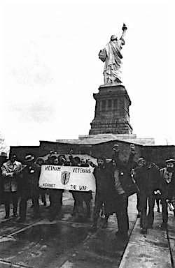

Friends,
We have a choice on Wednesday, Nov. 11. We can recognize the day as Veterans Day or Armistice Day.
If we wish to recognize Veterans Day -- a day of sales in stores and restaurants, a day that shows off military displays that glorify war and gives lip service to men and women that served, many changed forever -- then so be it.
Or we can reclaim the significance of Armistice Day, the original intention of that day -- a worldwide call for peace that was spurred by universal revulsion at the huge slaughter of World War One.
In Canada and the United Kingdom, this day is known as Remembrance Day. After World War II, the U.S. Congress decided to re-brand Nov. 11 as Veterans Day. Who could speak against that?
But honoring the warrior quickly morphed into honoring the military and glorifying war. Armistice Day was flipped from a day for peace into a day for displays of militarism.
How do veterans observe Nov. 11?
Visit the Veterans for Peace website and find an Armistice Day gathering near you.
Many Veterans for Peace chapters ring bells for peace, and ask local churches to do the same, at the eleventh hour of the eleventh day of the eleventh month, as was done at the end of World War One.
The United States Congress officially recognized the end of World War I when it passed a concurrent resolution on June 4, 1926, with these words:
"Whereas the 11th of November 1918, marked the cessation of the most destructive, sanguinary, and far reaching war in human annals and the resumption by the people of the United States of peaceful relations with other nations, which we hope may never again be severed, and
"Whereas it is fitting that the recurring anniversary of this date should be commemorated with thanksgiving and prayer and exercises designed to perpetuate peace through good will and mutual understanding between nations; and
"Whereas the legislatures of twenty-seven of our States have already declared November 11 to be a legal holiday:
"Therefore be it Resolved by the Senate (the House of Representatives concurring), that the President of the United States is requested to issue a proclamation calling upon the officials to display the flag of the United States on all Government buildings on November 11 and inviting the people of the United States to observe the day in schools and churches, or other suitable places, with appropriate ceremonies of friendly relations with all other peoples."
Many vets don't want to hear "Happy Veterans Day" or "thank you for serving" because we simply did our jobs based on the path that had been established for each of us.
Most veterans want that path to be grown over with vines and flowers. We'd rather celebrate that there is no more war.
Peace,
Jim Murphy
Founder
Veterans Fellowship of Reconciliation
P.S. Want to help spread this message on social media? Join the Armistice Day Thunderclap, share this Facebook image, or visit the Veterans for Peace resource page on Armistice Day. |